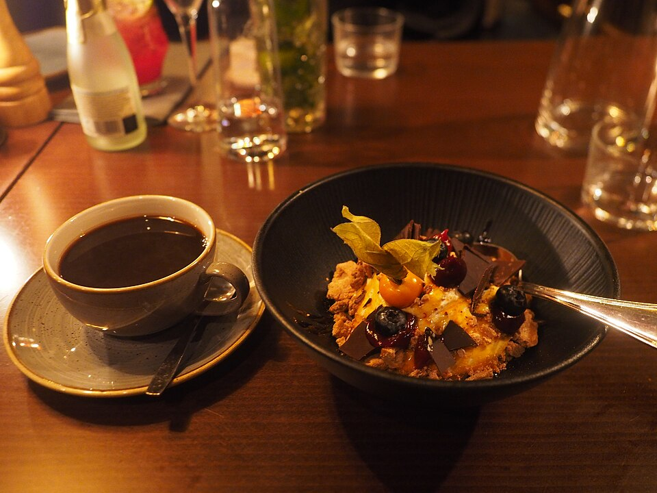

Doces · Musses
Musse Paixão

Ingredientes
- ½ xícara (chá) de polpa de maracujá
- 4 colheres (sopa) de açúcar
- 4 colheres (sopa) de água
- 3 ovos (claras e gemas separadas)
- 300 g de chocolate ao leite derretido
- 1 lata de creme de leite
- 1 pacote de biscoito champanhe (180 g)
Modo de preparo
- Ferva a polpa com metade do açúcar e a água por 10 minutos até calda; esfrie.
- Bata as gemas com o restante do açúcar por 7 minutos. Misture o chocolate e o creme de leite; incorpore as claras em neve.
- Forre o fundo das taças com biscoitos e um pouco de calda, cubra com o creme, decore com a calda restante e gele 4 horas.